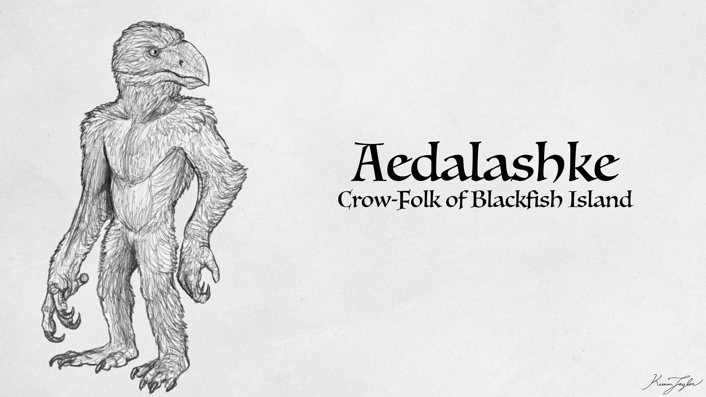

Scientific Classification
| Kingdom | Animalia | Animal | Animals |
|---|---|---|---|
| Phylum | Chordata | Chorda | Corded |
| Clade | Archosauria | ᾰ̓́ρχων + σαῦρος | Ruling Lizards |
| Clade | Avemetatarsalia | avis + μετᾰ́ + τᾰρσός | With Bird Metatarsals |
| Order | Pterosauria | πτερόν + σαῦρος | Winged Lizards |
| Clade | Caelidracones | Caelum + δρᾰ́κων | Sky Dragons |
| Suborder | Pterodactyloidea | πτερόν + δᾰ́κτῠλος | Finger Winged |
| Infraorder | Eupterodactyloidea | ἐΰς + πτερόν + δᾰ́κτῠλος | True Finger Winged |
| Clade | Azhdarchoidea | اژدر | Dragons |
| Clade | Tapejariformes | tapejara + fōrmis | Old Being Forms |
Taxonomic note: The classification of Kaimere's tapajarids is complicated by the extent of their evolutionary divergence. The name Tapajaridae is most appropriately applied to the family and its more direct representatives, whereas several of the most prominent modern pterosaur groups belong to more derived lineages that warrant recognition at a higher taxonomic level than their traditional association with tapejarids suggests.
01 · INTRODUCTION
Overview

The tapajarids of Kaimere are a diverse radiation of pterosaurs descended from Early Cretaceous forms that initially occupied relatively modest ecological niches beneath the dominance of larger flying reptiles. On Earth, their relatives were generally small to medium-sized pterosaurs associated with forests and wooded habitats, exhibiting adaptations for climbing, omnivory, and the consumption of fruit and seeds. On Kaimere, these ancestral characteristics proved remarkably versatile, eventually allowing the group to become one of the most successful and ecologically influential lineages of flying vertebrates in the modern world.
Unlike the giant azhdarchids and the rhamphorhynchids that once dominated Kaimere's skies, the early tapajarids did not initially specialize in aerial predation. They primarily inhabited forested environments, where they fed on fruit, seeds, nuts, and other readily available food sources. Their comparatively small size and generalized diets allowed them to coexist with the enormous rhamphorhynchids that ruled the skies during the early Cretaceous. Even after the arrival of the azhdarchids and nyctosaurids during the Age of Red Spring, tapajarids persisted as relatively inconspicuous woodland animals, avoiding direct competition with these newly established giants.
Their eventual rise to prominence followed the Dynastic Extinction. This catastrophe eliminated most of Kaimere's established giant pterosaurs and created an ecological vacuum in which numerous surviving flying lineages competed to occupy vacant niches. Tapajarids proved exceptionally well suited to this upheaval. Their dietary flexibility, climbing abilities, and capacity for rapid diversification enabled them to expand into an extraordinary variety of ecological roles. During the subsequent Warring Clades Period, they produced numerous large-bodied forms alongside the surviving azhdarchids, nyctosaurs, anurognathids, and other flying vertebrates. Although several of these groups briefly achieved impressive diversity, the tapajarids ultimately emerged as the dominant pterosaur lineage of the Known World.
Modern tapajarids occupy an extraordinary range of habitats and lifestyles. Some remain forest-dwelling omnivores that feed on nuts, seeds, leaves, and fruit, while others specialize in coastal crabs or other difficult prey. The bathawks, a highly successful radiation of predatory tapejarids, occupy a particularly important position in terrestrial ecosystems, hunting mammals, reptiles, birds, and juvenile dinosaurs. Their specialized cutting beaks and formidable aerial abilities have made them major competitors of birds of prey, limiting the ecological opportunities available to large eagles and other raptorial birds.
Other tapajarids have undergone even more radical transformations. Marine forms have diversified alongside the expanding seabird fauna, while some lineages have abandoned flight altogether. On Meridia, descendants of herbivorous forms became fully terrestrial, producing large grazing and browsing animals such as the stallion birds and the enormous scythebeak ziz. On Kaishel, a separate radiation of flightless, arboreal tapajarids evolved highly developed cognitive abilities, with some species exhibiting tool use, symbolic communication, and complex social structures. These animals, often compared to crow-apes, demonstrate how far the lineage has diverged from its flying ancestors.
The tapajarids' success is not attributable to a single adaptation. Rather, it reflects the combination of an adaptable ancestral ecology, the ability to exploit varied food sources, and an evolutionary history shaped by repeated environmental upheavals. Once minor inhabitants of the forest canopy, they have become one of the defining animal groups of modern Kaimere, occupying roles that on Earth are divided among birds, mammals, and other reptiles.
02 · DEEP TIME
Evolutionary History
Early Cretaceous Origins
Tapajarids first arrived on Kaimere during the Aptian and Albian harvests, approximately 115 — 85 million years ago. Their introduction occurred during the second Mesozoic Dynasty, a period in which the skies were already dominated by the highly successful rhamphorhynchids. These pterosaurs had diversified into numerous ecological roles, including aerial predators, scavengers, fishers, and large terrestrial hunters. Their dominance limited the opportunities available to newly introduced pterosaur lineages.
The early tapajarids consequently remained relatively small and generalized. Rather than competing directly with the rhamphorhynchids for aerial prey, they favored forested habitats and consumed seeds, fruits, nuts, and other plant material. Some were likely opportunistic omnivores, supplementing plant foods with insects and small animals. Their climbing adaptations would have allowed them to exploit branches and trunks, accessing food sources less readily available to large-bodied flying predators.
This initial specialization in woodland habitats proved important to their later evolution. While the rhamphorhynchids dominated the open skies, tapajarids maintained a foothold in forest ecosystems. They did not immediately develop the enormous size or predatory specializations that would later characterize some of their descendants. Instead, they persisted as a comparatively inconspicuous lineage whose success depended on avoiding direct competition with the dominant pterosaurs.
The Age of Red Spring and the Tyrant Dynasty
The transition into the Age of Red Spring brought a major restructuring of Kaimere's aerial ecosystems. The giant rhamphorhynchids had become victims of their own evolutionary success. Their largest members dominated the available resources, while their young and smaller pterosaur species faced increasing competition. When environmental changes and successive harvests altered the composition of the fauna, the giant rhamphorhynchids disappeared, leaving the largest-pterosaur niche open to newly introduced azhdarchids.
Azhdarchids and nyctosaurids arrived during this period, while anurognathids persisted as small insect specialists. These newcomers were already adapted to large-bodied or specialized lifestyles, limiting the opportunities for the tapajarids to expand into those roles. Tapajarids consequently remained relatively small generalists, continuing to exploit woodland food sources and avoid the competition posed by the new aerial giants.
This pattern continued through the Tyrant Dynasty. The azhdarchids flourished as large terrestrial and aerial hunters, while nyctosaurs diversified extensively, particularly in marine environments. Anurognathids occupied the nocturnal insectivore niche, complementing the daytime insectivory of enantiornithian birds.
During this lengthy period of ecological stability, two major tapajarid lineages developed more specialized adaptations for arboreal life. Both evolved features such as enhanced grasping abilities and binocular vision, but they subsequently diverged into different ecological roles. One lineage remained primarily herbivorous and omnivorous, exploiting fruits, seeds, nuts, leaves, and other forest resources. The other developed into the carnivorous bathawks, whose distinctive beaks and predatory behavior would eventually make them among the most consequential aerial hunters of the Known World.
The emergence of these two lineages established the foundation for the modern diversity of tapajarids. Their specializations allowed them to occupy distinct ecological niches while the larger pterosaur groups continued to dominate the skies. By the end of the Tyrant Dynasty, tapajarids had persisted through millions of years of competition without yet becoming the dominant pterosaurs of Kaimere.
The Dynastic Extinction and the Warring Clades Period
The Dynastic Extinction brought an end to the Tyrant Dynasty and devastated Kaimere's established megafauna. The extinction eliminated most large pterosaurs, including the dominant azhdarchid forms, while nyctosaurs survived only through a limited number of smaller representatives. Azhdarchids persisted through a lineage of comparatively small generalist hunters, but the enormous aerial predators that had defined earlier dynasties were largely gone.
Unlike earlier extinctions, this event was not followed by the immediate introduction of new giant pterosaurs capable of reclaiming the vacant niches. The skies instead became a competitive arena in which surviving lineages and smaller-bodied newcomers could expand. The Warring Clades Period, approximately 14 — 6 million years ago, saw an extraordinary diversification of flying vertebrates. Anurognathids, nyctosaurs, azhdarchids, and tapajarids all produced larger forms, while flying therocephalians became formidable aerial animals across the Permian Islands. Enantiornithian birds also evolved gigantic raptorial species, and several Miocene bird lineages entered the Known World at substantial sizes.
For several million years, no single group possessed an uncontested claim to aerial dominance. Large pterosaurs and birds competed for prey and territory, and different regions developed their own assemblages of aerial predators. The tapajarids were among the principal beneficiaries of this upheaval, with their established dietary flexibility and pre-existing ecological diversity allowing them to diversify into a broad range of niches.
Their success was not simply a matter of producing the largest possible animals. While some tapajarids became formidable predators, others expanded into marine environments, developed new feeding specializations, or continued to exploit forest resources. This diversity gave the lineage multiple routes to survival as the composition of the aerial fauna changed. The extinction had removed many of their established competitors, while the absence of newly harvested giant pterosaurs prevented another lineage from immediately monopolizing the largest niches.
Ultimately, tapajarids emerged as the most ecologically successful pterosaur lineage in the Known World. Other groups survived, but their modern distributions and diversity became increasingly restricted by competition with the expanding tapajarids. Nyctosaurs, once dominant marine pterosaurs, were particularly affected by the spread of specialized marine tapajarids and the arrival of abundant seabirds. Anurognathids persisted in smaller forms, increasingly pressed into specialized insectivorous niches by the arrival of bats. Azhdarchids retained a presence in the tropics, but their surviving diversity was limited compared with the radiation of tapajarids.
The Modern Radiation
The modern diversity of Kaimere's tapajarids reflects the evolutionary opportunities created during the Warring Clades Period. Although the lineage underwent substantial diversification during this interval, many of its major ecological forms retain recognizable characteristics of their earlier ancestors. Arboreal generalists, seed-cracking forms, and fruit-eaters preserve the ancestral tendency toward exploiting woodland resources, while the bathawks represent a major expansion into predatory niches.
The basal nut-snappers remain among the most recognizable descendants of the older tapajarid radiation. Their downward-curving beaks, reinforced by prominent crests, allow them to crack tough seeds and nuts. Some species also consume vegetation, while the crab-snappers have become specialized coastal feeders that hunt crustaceans. These forms tend to be relatively wary and avoid settlements, and their smaller representatives have suffered from competition with primates and parrots. Nevertheless, related forms remain more successful in regions beyond the Known World, where their reclusive habits and comparatively low abundance may reduce direct competition.
The bathawks, classified within Xiphognatha, represent the most significant predatory radiation. Their beaks combine a hooked upper jaw with a self-sharpening lower cutting edge, allowing them to anchor prey and slice through flesh with remarkable efficiency. Their diet varies with body size and habitat, ranging from small mammals and reptiles to juvenile dinosaurs and birds. Some species remain agile forest climbers, while larger forms soar over open woodland or hunt through prairie vegetation. The grizzly xiphognath has also developed a substantial fish-eating component in its diet, demonstrating that the clade can independently exploit aquatic prey without abandoning its broader predatory habits.
Marine tapajarids have diversified into another important ecological role. The terror gulls are highly successful marine specialists that hunt fish and crustaceans, with the largest species also capable of attacking small marine vertebrates. Their speed, endurance, and ability to exploit productive coastal waters have helped them displace the remaining nyctosaurs across much of the Known World. Other large marine pterosaurs, such as the banshee gulls, are now understood to belong to the terrestrial bathawk lineage rather than the terror gulls, illustrating how similar ecological pressures have produced convergent adaptations within the broader radiation.
On Meridia, some tapajarids have taken an entirely different evolutionary path. Following the Dynastic Extinction, volcanic ash and the loss of terrestrial megafauna created an environment in which herbivorous pterosaurs could thrive with relatively little predation. Their descendants gradually abandoned flight, evolving into fully terrestrial animals. The stallion birds became large, herd-living herbivores of the open prairies, while the scythebeak ziz evolved into an enormous flightless browser whose reduced wings no longer provide meaningful lift. These animals demonstrate that the tapajarid body plan could persist even after its defining ancestral adaptation—powered flight—was lost.
The most unusual modern radiation occurs in the forests of Kaishel, the Khalin Sea, and Pakardia. There, one lineage of tapajarids abandoned flight in favor of a specialized arboreal lifestyle. Their wing fingers became greatly reduced and more flexible, functioning as grasping thumbs, while their bodies became adapted for climbing through the canopy. Freed from the demands of sustained flight, these animals developed increasingly complex cognitive abilities. Several species are known to use tools, communicate through visual signals, and maintain complex social relationships. Some possess sophont intelligence comparable to that of primates and, in certain respects, humans. Their existence demonstrates that the tapajarid radiation extends beyond the evolution of new feeding strategies and body sizes, encompassing profound changes in behavior, cognition, and social organization.
03 · SPECIES ACCOUNTS
Known Diversity
The following accounts document representative tapajarids recorded in the encyclopedia. Select a species to consult its individual natural history and descriptive account.
Aedalashke

Scientific placement to be confirmed
The Aedalashke crow-men were assumed by Felicity to be a demon or homunculus of some sort, but it appears instead that they are a relative of the Notzokideu of Pakardia. Similar stories of crow-men are reported from numerous Khalin islands. It is not known if these are distinct from Notzokideu and have been independent since the low sea levels 1.5 million years ago, or if there have been dispersals by boat more recently. The crow-men of Hyote were not drawn with the tall crested beak of Pakardiant crow-folk, but this may be an oversight or some sort of less significant regional variation. The crow-folk of Khalren are said to not have nose crests, but those in the To Katon island do, so it remains unknown. They have witches and possibly shapeshifters, according to Wind-Kisser, and while they were called demons, he clarified they did not have magic unless otherwise specified. They traded fruit, fermented juice, intricate textiles, silk, and trinkets along with gold and other precious metals and gems they took from rivers. They were most interested in worked metals, but also seemed to trade for stories and weird things from peoples the Blackfish interacted with. Sometimes they would work as navigators on Blackfish ships, as they can 'smell direction' and are therefore invaluable in shrouded conditions, but they are said to be a nonviolent people and will only navigate for trading and scouting missions, not raiders or war bands, which the Blackfish seem to respect enough that there does not appear to have been a history of conflict between them.
Read species article →04 · CLASSIFICATION
Taxonomic Notes
Tapajarids belong to the broader radiation of pterosaurs introduced to Kaimere during the Early Cretaceous. Their ancestors were among the smaller pterosaurs inhabiting Earth at the time, where members of the tapejaromorph lineage displayed considerable variation in diet and lifestyle. Although some possessed large crests and unusual beak shapes, the group was not uniformly specialized for any single feeding strategy. Fossil evidence from Earth, including specimens with seeds preserved in the abdominal region, suggests that at least some members were adapted to consuming fruit, nuts, and other plant material. Other forms were more omnivorous, while certain lineages may have been predatory.
The historical classification of these pterosaurs has been complicated by the variety of their cranial structures. Some taxa, such as Thalassodromeus, were originally interpreted as marine or shoreline specialists because of their elongated, blade-like lower jaws, which superficially resemble the bills of skimming birds. More recent interpretations instead emphasize the potential use of this anatomy in prey capture and processing. The powerful bite and shearing edges of these animals may have allowed them to seize and dismember prey, providing a possible anatomical foundation for the specialized predatory apparatus found in Kaimere's bathawks.
The precise relationships among modern Kaimeran tapajarids remain a subject of taxonomic investigation. The family encompasses several major lineages that have diverged substantially from their ancestral forms, and the degree of anatomical and ecological specialization within some of these groups has prompted debate over their classification. Bathawks, for example, are highly derived carnivorous tapejarids, while the terror gulls are considered a distinct family-level lineage rather than close relatives of the bathawks. Although both groups belong to the broader tapejarid radiation in the general sense used by many naturalists, their last common ancestor lived approximately thirty million years ago. Their superficially similar predatory adaptations therefore represent a more distant relationship than their shared appearance might suggest.
The flightless tapejarids of Kaishel present another taxonomic challenge. Their ancestors were volant tapejarids, but the loss of flight, development of highly flexible forelimbs, and emergence of sophisticated cognition and culture distinguish them dramatically from their flying relatives. Their anatomy and evolutionary history nevertheless place them within the broader tapejarid radiation. Naturalists of Bolondakoi have consequently treated them as a distinct group of crow-like, ape-like animals, while some other researchers favor retaining them within the family and recognizing their extreme divergence at a lower taxonomic level. The analogy sometimes drawn is that of apes within the primates: a highly derived lineage that remains nested within its ancestral group despite possessing traits that justify special recognition.
The more terrestrial tapejarids of the Dragon Archipelago represent a further major departure from the ancestral condition. Isolated following the Dynastic Extinction, these herbivorous pterosaurs diversified in environments where large terrestrial predators had disappeared. Over time, some became incapable of flight, developing powerful hindlimbs and increasingly reduced wings. The stallion birds and scythebeak zizs are among the most striking products of this radiation, demonstrating that the family's evolutionary success is not dependent upon retaining aerial locomotion.